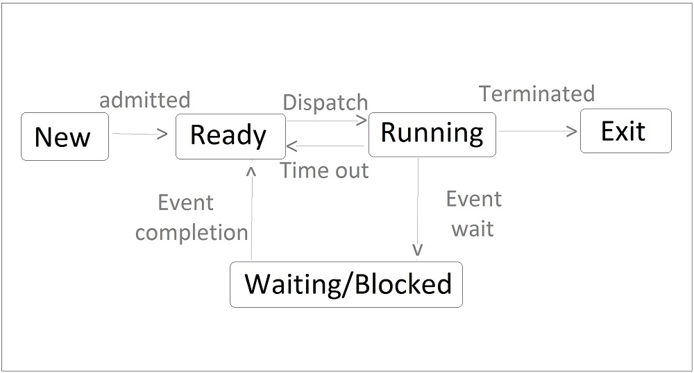

- New : The process is being created.
- Ready : The process is ready to be assigned to processor. All those processes are loaded in RAM & waiting for CPU in ready state.
- Running : Instruction are being executed in CPU.
- Waiting/Blocked : The process is waiting for seome event to occur. Here all those processes are moved from CPU to waiting state. When CPU becomes free, The process from blocked state move to ready state and then in running state.
- Exit : The process has finished execution. It is terminated from CPU & RAM.